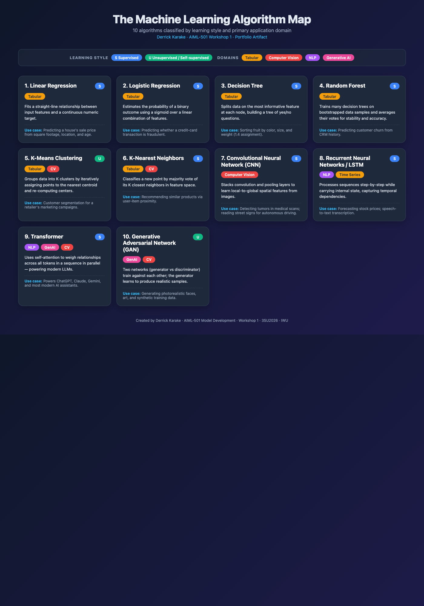
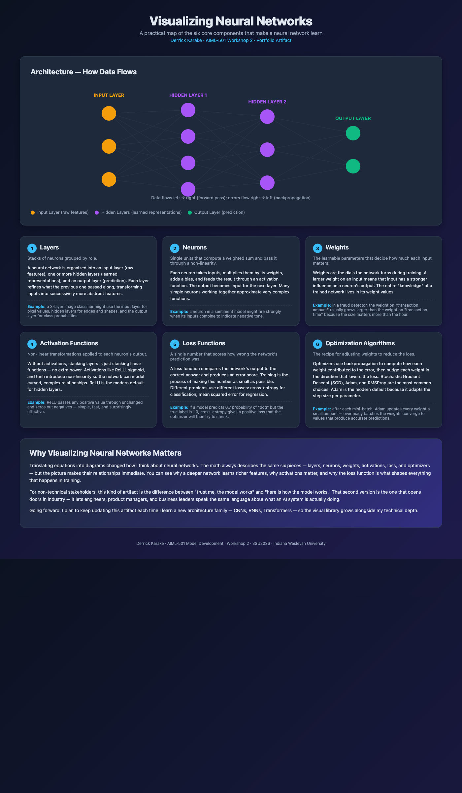
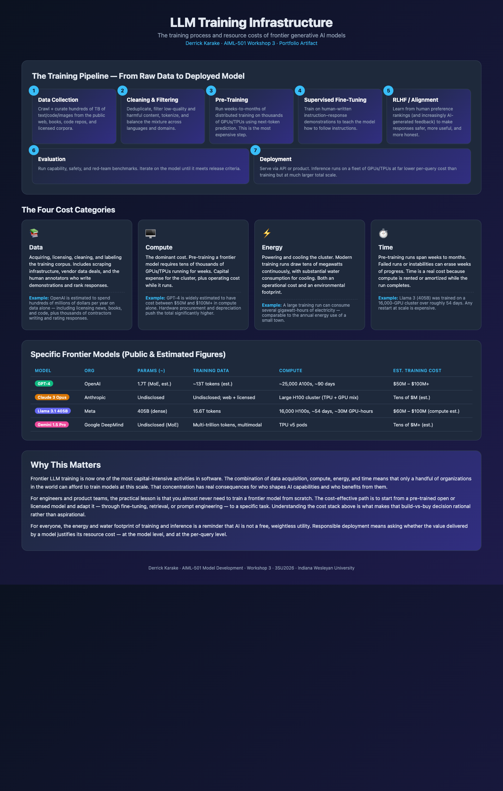
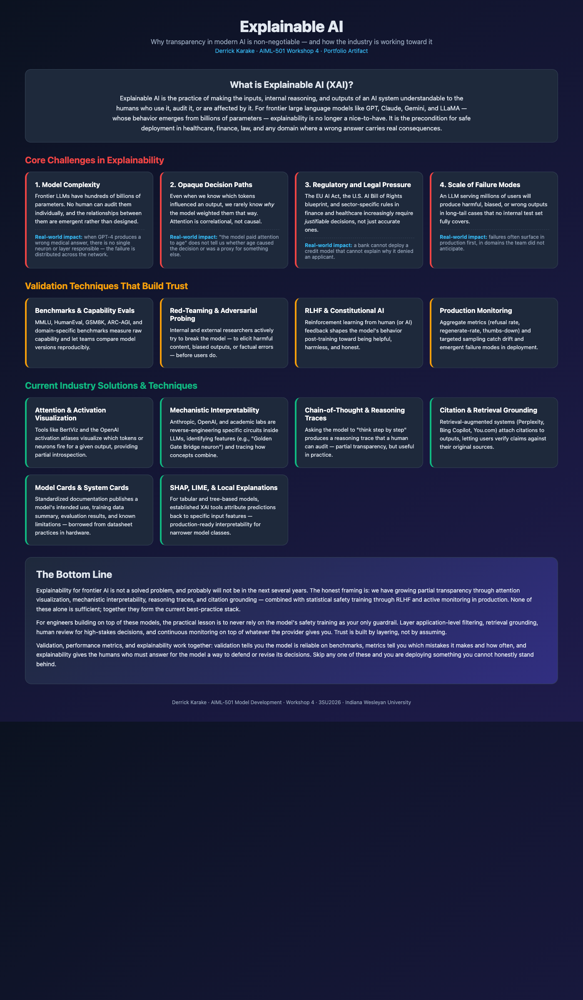
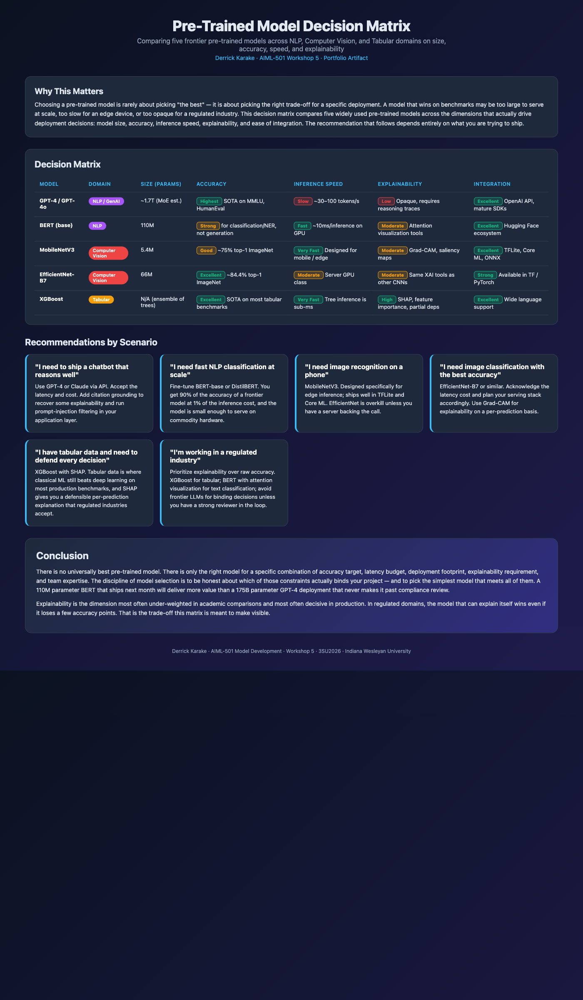

$2.5M
Projected annual savings from real-time data acquisition improvements
Data Scientist | Data Engineering | Applied ML
Data scientist with experience building production data pipelines, machine learning solutions, and internal analytics tools. My work has focused on turning operational data into reliable systems, measurable cost savings, and better decision-making.
Selected Outcomes
$2.5M
Projected annual savings from real-time data acquisition improvements
97%+
Real-time data completeness after pipeline and device improvements
$40K/mo
Savings from eliminating third-party software dependency
5,000+
Images processed daily by an NLP extraction workflow
About Me
I'm a data scientist from Nairobi, Kenya, now based in Oklahoma City, with a passion for building AI and machine learning systems that solve real-world problems. My journey into data science started during my computer science undergraduate studies at Oklahoma Christian University, where I became fascinated by the power of algorithms to find patterns in data that humans might miss.
That curiosity led me to pursue a Master's in Data Science, where I deepened my expertise in machine learning, NLP, and statistical modeling. Since then, I've had the opportunity to apply these skills in production environments, from deploying BERT-based NLP models processing thousands of documents daily to building real-time data pipelines that save millions in operational costs.
What sets me apart is my ability to bridge the gap between complex AI/ML research and practical business applications. I don't just build models; I build end-to-end systems that deliver measurable impact. Whether it's improving data reliability from 80% to 97%, eliminating costly third-party dependencies, or designing full-stack applications backed by cloud infrastructure, I focus on solutions that move organizations forward.
Featured Projects
Each project below demonstrates a different facet of my AI/ML skill set, from natural language processing to real-time data engineering. These artifacts are tailored for technical hiring managers and collaborators who want to understand both the technical depth and business impact of my work.
Designed and deployed a question-answering pipeline built on a fine-tuned BERT model to automatically extract structured information from over 5,000 scanned TIFF images per day. The system replaced a manual review process, reducing turnaround time and human error while achieving an F1 score of 0.90.
Built an end-to-end ingestion system that collects, validates, and maps real-time operational data from field devices into a PI time-series database. The pipeline processes approximately 80 CSV files daily through automated API integrations and includes robust error handling and monitoring.
Developed a full-stack web application that helps drilling and supply chain teams forecast casing requirements for future wells. The app integrates with Snowflake for data warehousing and uses Azure Active Directory for enterprise authentication, providing teams with data-driven planning capabilities.
Collaborated on a student team to design a machine learning system that uses motion-capture data to predict and prevent workplace injuries. The proposal won the Love's Entrepreneurs Cup, Oklahoma's top entrepreneurship competition, earning $12,000 in prize funding.
Course Artifacts
These artifacts were developed as part of my graduate coursework in Machine Learning Fundamentals at Indiana Wesleyan University. Each artifact demonstrates a specific AI/ML competency learned during the course, presented here for both academic review and professional audiences.
Explored the foundational concepts of artificial intelligence and machine learning, including the historical development of the field, key terminology, and the distinction between AI, ML, and data science. This artifact reflects my initial understanding of where ML fits within the broader technology landscape and how it applies to real-world business problems.
Conducted a comparative analysis of traditional machine learning and deep learning approaches using real-world case studies. Examined credit card fraud detection (Random Forest) as an ML use case and medical image analysis for skin cancer detection (CNN) as a deep learning use case, evaluating when each approach is most appropriate based on data structure, interpretability needs, and computational requirements.
Studied the core architectures of deep learning including Artificial Neural Networks (ANNs), Convolutional Neural Networks (CNNs), Recurrent Neural Networks (RNNs), and Generative Adversarial Networks (GANs). Explored how each architecture processes data differently, the role of activation functions and backpropagation in training, and the ethical implications of synthetic data generation such as deepfakes. Applied this knowledge through a quiz assessment and a discussion on communicating complex technical concepts to non-technical audiences.
Examined the data challenges inherent in training and deploying machine learning systems, with a focus on human bias as both a technical and ethical problem. Developed a personal value statement for bias-aware leadership and crafted five field-specific strategies for identifying and mitigating bias throughout the ML development lifecycle — from data collection and labeling through model validation and post-deployment feedback. Connected concepts of data quality, privacy, and fairness to real-world leadership responsibilities in AI.
Explored the full model development lifecycle with a focus on validation, verification, and the iterative nature of deploying machine learning systems in production. Analyzed a real-world ML project to evaluate how data preprocessing, model selection, validation strategies, performance metrics, ethical safeguards, and post-deployment monitoring contribute to building reliable and responsible AI systems. Connected the technical lifecycle to leadership principles, emphasizing that iterative learning — the willingness to measure, learn, and adapt — is essential for both model performance and professional growth.
Built a visual framework classifying ten core machine learning algorithms by learning style (supervised vs. unsupervised) and primary application domain (Tabular Data, Computer Vision, NLP, Generative AI). Each card on the infographic captures how the algorithm works in a single line and pairs it with a real-world use case. The artifact serves as a reference map for selecting the right approach to a new ML problem and as a teaching aid for explaining algorithm choice to non-technical stakeholders.

Click the infographic for the full interactive version.
Created a visual artifact that explains the six core building blocks of a neural network — layers, neurons, weights, activation functions, loss functions, and optimization algorithms — alongside an architecture diagram of how data flows from inputs through hidden layers to predictions. The artifact translates the math of neural networks into a picture a non-technical audience can follow, while still being precise enough to anchor real engineering decisions.

Click the artifact for the full interactive version.
Built an infographic that maps the seven-stage training pipeline for frontier large language models (data collection, cleaning, pre-training, supervised fine-tuning, RLHF, evaluation, deployment) and quantifies the four cost categories that drive total spend (data, compute, energy, time). Includes a comparison table for GPT-4, Claude 3 Opus, Llama 3.1 405B, and Gemini 1.5 Pro with publicly available figures, plus a takeaway section on why these costs concentrate the AI industry in a handful of organizations and what that means for engineers building on top.

Click the infographic for the full interactive version.
Maps the current state of Explainable AI (XAI) across three pillars: the core challenges that make modern frontier models hard to explain (model complexity, opaque decision paths, regulatory pressure, scale of failure modes), the validation techniques used to build trust (benchmarks, red-teaming, RLHF, production monitoring), and the industry solutions emerging to close the gap (attention visualization, mechanistic interpretability, chain-of-thought, retrieval grounding, SHAP/LIME). The artifact frames XAI as a layered defense rather than a single tool.

Click the infographic for the full interactive version.
Decision matrix comparing five widely deployed pre-trained models (GPT-4, BERT, MobileNetV3, EfficientNet-B7, XGBoost) across NLP, computer vision, and tabular domains. Each model is scored on size, accuracy, inference speed, explainability, and integration. The matrix translates into six scenario-based recommendations covering chatbots, edge deployment, regulated industries, and tabular prediction — turning a comparison into an actionable selection guide.

Click the matrix for the full interactive version.
Experience
Skills
My background sits at the intersection of analytics, machine learning, data platforms, and application development.
Python, SQL, Pandas, PySpark, scikit-learn, TensorFlow, Java
NLP, deep learning, time-series analysis, regression, decision trees, CNNs, Bayesian methods
Snowflake, Hadoop, Firebase, Power BI, Sisense, Git, OpenCV, Node-RED
Azure, Google Cloud Platform, JavaScript, .NET, C#, Flutter, Streamlit
Education
M.S. in Data Science
B.S. in Computer Science
Recognition
April 2020
Contributed to a student team that proposed a machine learning and motion-capture-based system for predicting and reducing workplace injuries. The team won Oklahoma's top entrepreneurship competition and received $12,000 in prize funding.
Contact
For portfolio reviews, interviews, or collaboration, reach out by email or phone.